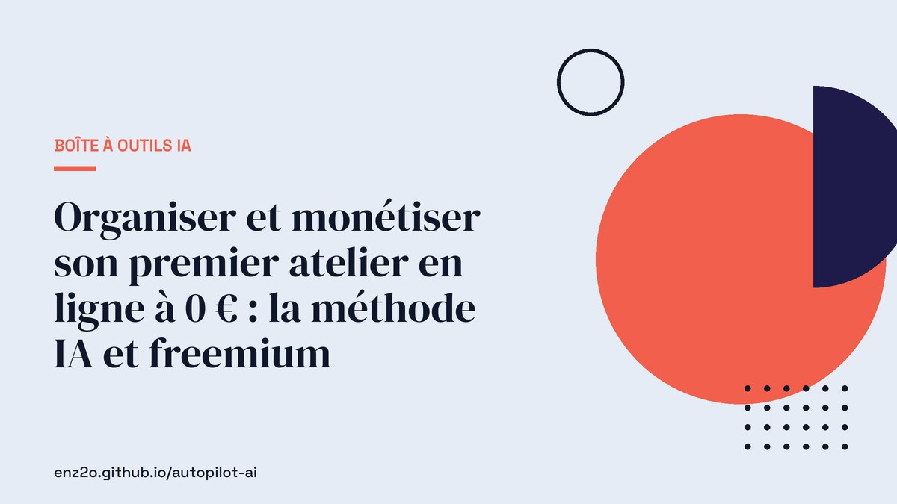
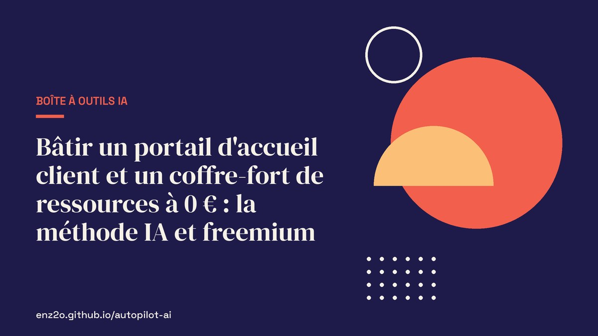
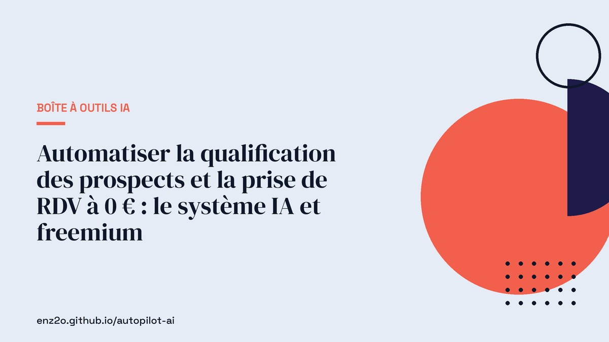
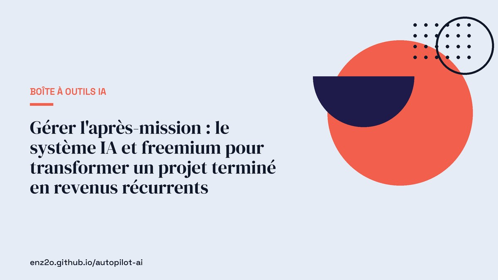
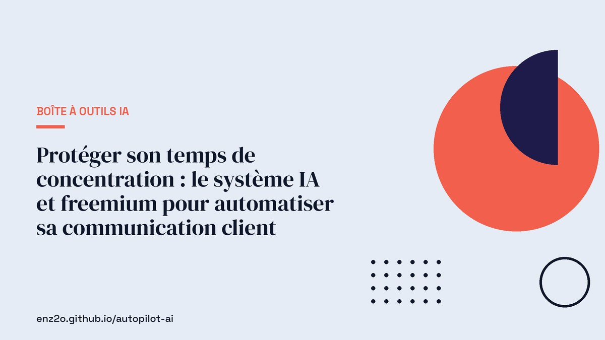
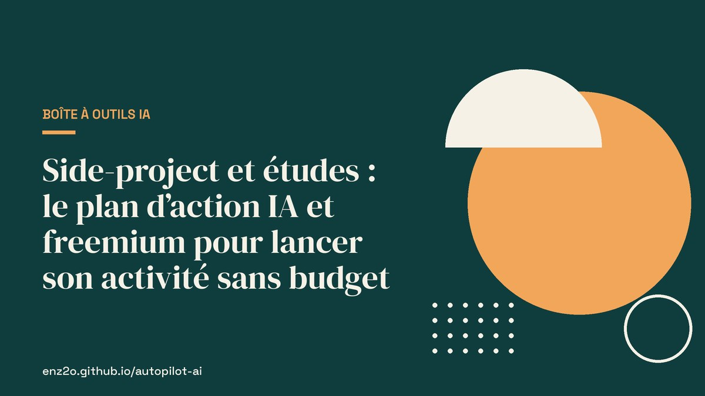
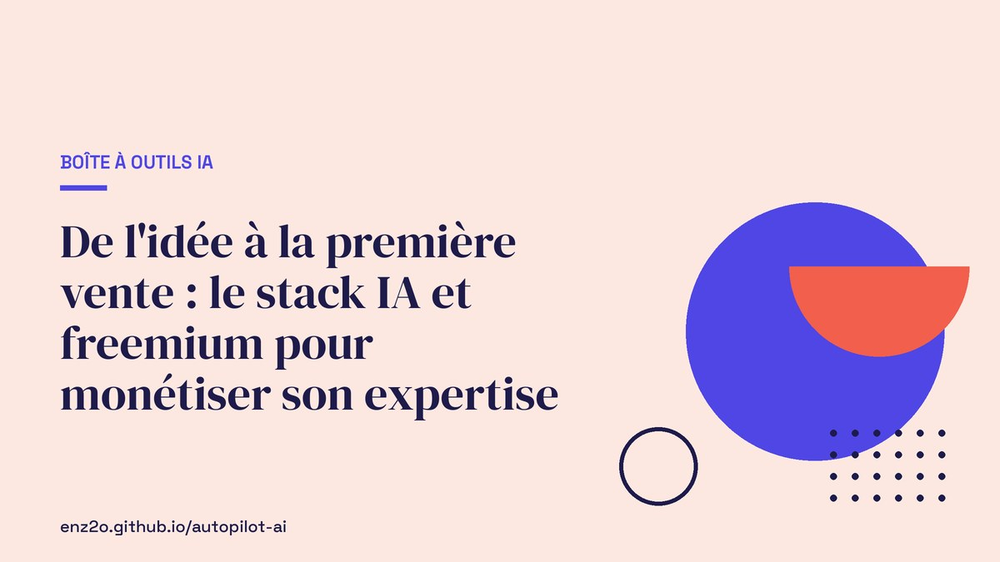
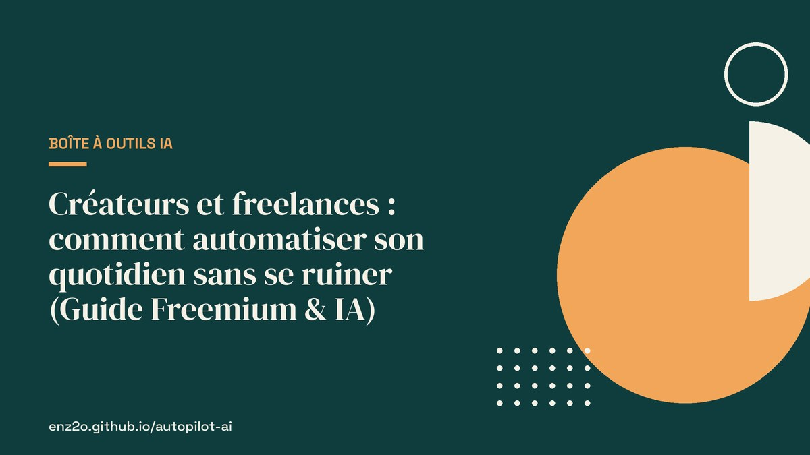
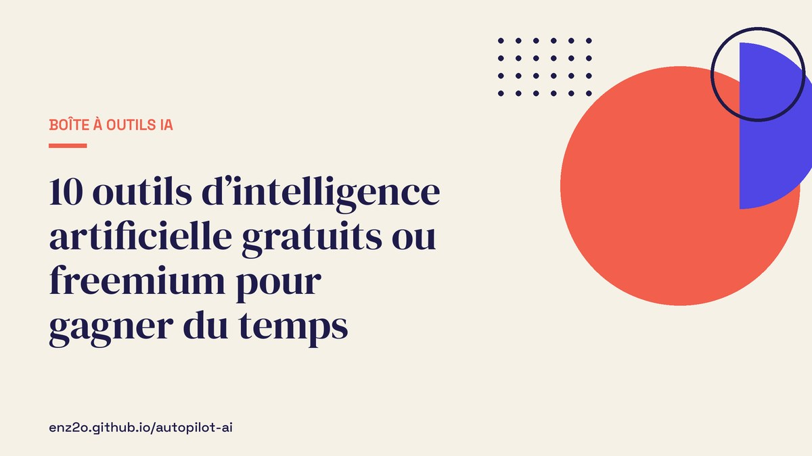

Organiser et monétiser son premier atelier en ligne à 0 € : la méthode IA et freemium
2026-11-26 · Découvrez comment concevoir, promouvoir et animer un atelier en ligne rentable sans budget grâce aux IA gratuites et aux outils freemium tout-en-un.

Bâtir un portail d'accueil client et un coffre-fort de ressources à 0 € : la méthode IA et freemium
2026-11-25 · Découvrez comment automatiser l'onboarding de vos clients et centraliser vos ressources pédagogiques avec l'IA et les outils freemium sans débourser un centime.

Validation client et travail asynchrone : la méthode IA et freemium pour supprimer les réunions inutiles
2026-11-25 · Gagnez 5 heures par semaine en éliminant les réunions inutiles grâce au travail asynchrone et à un système IA et freemium optimisé.

Automatiser la qualification des prospects et la prise de RDV à 0 € : le système IA et freemium
2026-11-24 · Découvrez comment filtrer vos prospects, préparer vos appels et automatiser votre suivi à 0 € grâce à un système intelligent basé sur l'IA et le freemium.

Boostez votre créativité : le processus IA freemium pour générer des idées de contenu en 30 minutes
2026-11-24 · Apprenez à créer un système IA freemium qui génère des idées de contenu rapidement, sans budget, pour freelances, étudiants et créateurs francophones.

Gérer l'après-mission : le système IA et freemium pour transformer un projet terminé en revenus récurrents
2026-11-23 · Découvrez comment l'IA et les outils gratuits permettent d'automatiser le suivi client, récolter des témoignages et générer de futures opportunités.

Deep Work et IA : la méthode hybride (physique + freemium) pour se concentrer et produire 2x plus vite
2026-11-23 · Combinez la puissance des IA gratuites et du matériel physique pour éliminer la fatigue décisionnelle, rester concentré et produire des livrables de qualité.

Protéger son temps de concentration : le système IA et freemium pour automatiser sa communication client
2026-11-22 · Découvrez comment bâtir un workflow freemium et IA pour filtrer vos messages, automatiser vos comptes-rendus et préserver votre Deep Work.

Bâtir son Second Cerveau avec l'IA et le freemium : le guide pour structurer vos connaissances à 0 €
2026-11-22 · Découvrez comment créer un Second Cerveau performant grâce aux outils IA freemium. Ne perdez plus aucune idée et gagnez un temps précieux au quotidien.

Concevoir et héberger son premier mini-cours en ligne à 0 € : le plan d'action IA et freemium
2026-11-22 · Découvrez comment concevoir, enregistrer et diffuser votre première formation en ligne à 0 € grâce à l'IA et aux meilleurs outils freemium.

Créer, héberger et vendre son premier e-book à 0 € : le système IA et freemium pas à pas
2026-11-21 · Découvrez comment rédiger, designer et vendre un e-book de qualité sans débourser un centime grâce aux outils freemium et à l'intelligence artificielle.

Du portfolio à la conversion : structurer votre vitrine pro avec l'IA et le freemium
2026-11-21 · Apprenez à concevoir un portfolio interactif et axé conversion grâce aux outils IA et freemium sans dépenser le moindre euro.

Lancer sa newsletter d’expertise à 0 € : la méthode IA et freemium pour captiver son audience
2026-11-21 · Découvrez comment créer, rédiger et automatiser une newsletter professionnelle sans dépenser un euro grâce aux outils IA et au freemium.

Side-project et études : le plan d’action IA et freemium pour lancer son activité sans budget
2026-11-20 · Découvrez comment lancer votre side-project ou activité freelance en parallèle de vos études grâce à un écosystème gratuit d'IA et de logiciels freemium.

Du premier contact au devis signé : le protocole IA et freemium pour décrocher des missions à 0 €
2026-11-20 · Découvrez comment structurer vos propositions commerciales et automatiser votre cycle client avec des outils IA gratuits pour signer plus vite sans budget.

Expérience client et livraison : bâtir un workflow fluide à 0 € avec l'IA et le freemium
2026-11-19 · Découvrez comment professionnaliser vos propositions, cadrer vos projets et soigner votre livraison client grâce aux outils freemium et à l'IA gratuite.

Créer et distribuer son premier lead magnet en 3 heures : la méthode IA et freemium à 0 €
2026-11-19 · Découvrez comment concevoir, mettre en page et automatiser la livraison d'un aimant à prospects sans dépenser un euro grâce à l'IA et aux outils freemium.

Planifiez votre année de contenu en 5 étapes grâce aux IA gratuites et aux outils freemium
2026-11-19 · Apprenez à créer un calendrier éditorial 100 % gratuit avec l'IA, les outils freemium et un workflow qui libère du temps pour freelances, étudiants et créateurs

Construisez votre tableau de bord IA gratuit : centralisez vos projets et libérez du temps
2026-11-18 · Apprenez à créer un tableau de bord IA gratuit avec des outils freemium pour organiser vos projets, suivre vos tâches et gagner jusqu’à 5 h/semaine.
Transformer ses recherches en livrables concrets : la méthode IA et freemium pour ne plus s'éparpiller
2026-11-18 · Apprenez à structurer votre veille, synthétiser vos recherches et créer des livrables professionnels rapidement grâce aux outils d'IA freemium.

Dites adieu aux tâches ingrates : le système IA et freemium pour libérer 5 heures par semaine
2026-11-17 · Découvrez comment éliminer les micro-tâches chronophages grâce à un workflow IA et freemium pensé pour les freelances, étudiants et créateurs.

Vaincre la surcharge mentale : concevoir une routine de travail fluide avec l'IA freemium et les outils tout-en-un
2026-11-17 · Découvrez comment réduire la fatigue décisionnelle et centraliser votre travail grâce à une routine IA freemium simple, efficace et accessible.

Simplifier sa stack digitale : comment éliminer le superflu grâce à l'IA et au freemium
2026-11-17 · Trop d'outils tuent la productivité. Découvrez comment épuré votre stack de freelance ou créateur grâce à l'IA et des solutions freemium efficaces.

Du texte au réseau complet : le guide pour recycler ses contenus avec l'IA sans s'épuiser
2026-11-16 · Apprenez à transformer un contenu unique en plusieurs formats captivants grâce aux outils d'IA gratuits et bâtissez votre présence en ligne.

Construisez votre Écosystème d’IA Freemium en 5 Étapes pour Gagner du Temps et Booster vos Revenus
2026-11-16 · Apprenez à assembler un workflow IA gratuit ou freemium en 5 étapes simples, idéal pour freelances, étudiants et créateurs francophones.

L'art de déléguer à l'IA quand on travaille seul : guide pratique à 0 € de budget
2026-11-15 · Apprenez à déléguer vos tâches chronophages à des outils IA gratuits ou freemium. Un guide pratique pour freelances, étudiants et créateurs.

Construire votre Hub de Productivité IA gratuit : Le guide ultime pour freelances, étudiants et créateurs de contenu
2026-11-15 · Découvrez comment assembler des outils IA gratuits et freemium pour automatiser votre quotidien et gagner du temps sans dépenser un centime.

De l'idée à la première vente : le stack IA et freemium pour monétiser son expertise
2026-11-15 · Lancez votre activité freelance ou vos produits numériques sans budget grâce à un workflow basé sur des outils IA freemium simples et efficaces.

Freelances et créateurs : concevoir et lancer un projet complet grâce au workflow IA et Freemium
2026-11-15 · Apprenez à structurer votre workflow de production et de vente sans budget grâce aux meilleurs outils IA et logicels freemium pour freelances et créateurs.

Créateurs et freelances : comment automatiser son quotidien sans se ruiner (Guide Freemium & IA)
2026-11-15 · Découvrez comment optimiser votre temps avec les meilleurs outils freemium et l'IA. Un guide pratique et honnête pour freelances, étudiants et créateurs.

Travailler plus vite sans payer : bâtir son espace de travail IA 100 % gratuit
2026-11-15 · Marre d'accumuler les abonnements ? Découvrez comment structurer une routine de travail ultra-productive grâce aux meilleurs outils IA gratuits.

10 outils d’intelligence artificielle gratuits ou freemium pour gagner du temps
2026-11-15 · Découvrez 10 IA gratuites ou freemium qui boostent la productivité des freelances, étudiants et créateurs de contenu francophones.